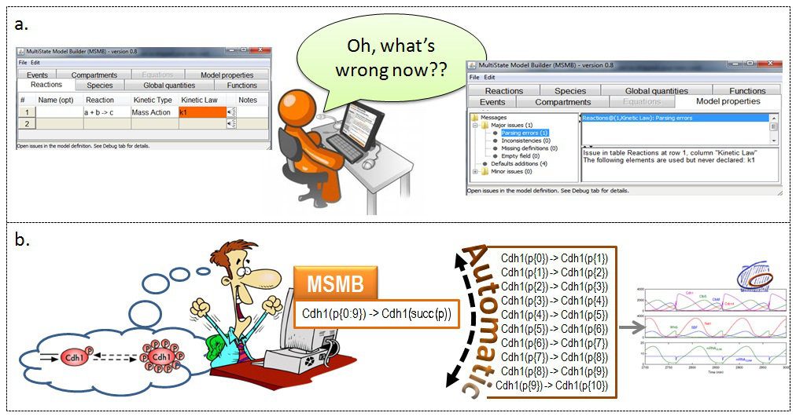

MSMB - Introduction and motivation
The representation of complex molecular regulatory networks presents big challenges to modelers not just because of the intrinsic difficulty of describing how nature works, but also because modeling tools have often been written without taking into consideration specific modeling scenarios. The often very straightforward ways of describing a model in the user's mind have to be unfolded and adapted to the input format of the chosen tool: this manual process must be carried out each time the model is changed, leading to a very painful and error prone phase in which the modeler is more concerned about how to obtain from the tool what s/he is expecting to see rather than focusing on creating the model, interpreting and analyzing its behavior.
A key challenge for any user-friendly modeling tool is to identify specific modeling scenarios and support the user during the creation of a complex model, without forcing him/her down fixed paths.
The specific modeling scenario that we want to tackle in this work is the concept of a "multistate species", a way to reduce the number of reactions needed to represent certain molecular systems. In particular, a multistate species is an entity with a defined set of internal states, which refer to a group of different forms of the same conceptual species. For example a species can have 5 different phosphorylation states, representing the total number of phosphate group attached to the original species. The same species, in different states, can interact in different ways with the rest of the system (e.g., it may be active only when 3 phosphorylation sites are occupied). Moreover multistate species are involved in multistate reactions which represent the effects of a set of similar reactions on the system.
What is missing in all the available modeling tools today is a compact way of representing such groups of similar reactions.
While in computational biology, many efforts have been devoted to develop specific tools for specific computational needs (JigCell [
Vass04,
Vass06] and COPASI [
Hoops06] are two of the many tools currently available), insufficient attention has been paid to design those tool to meet the thought patterns of (human) users. The skills currently required to write a biochemical model are not very far from the ones required to write professional software code. New platforms for writing biological models should contain the same amount of user-support as classical IDEs (Integrated Development environment) for computer programmers (e.g., contextual autocompletion, error messages that helps the user to recover from mistakes, errors with different priorities, etc.). In general, we believe that developing a tool that gives the user the flexibility and freedom of following his/her own path in editing a model will create a stronger bond between modelers and software developers because modelers will trust more the software if, instead of feeling constrained in their actions by the tool capabilities, they will see that the tool's response changes according to the contextual information available at any point in time. A tool that is able to use this (possibly incomplete) information to suggest to the user what actions are needed from his/her side to reach the final goal of having a complete and valid model, is going to provide a better experience (from the modeler's point of view) than a tool, like most existing ones, that forces the user to follow specific constrained steps to guarantee (from the tool's point of view) that everything is valid and correct.
Motivated by the ideas described above, we implemented Multistate Model Builder (MSMB), a spreadsheet interface which supports the input of multistate species and reactions in a compact way and that supports the user through the whole modeling process (from the first reaction definition to the final export to a valid and complete SBML/COPASI file). The implementation of the tool takes advantage of the COPASI API [
Hoops06] to export a model in the classical single-state format: MSMB takes care of the proper expansion of all the multistate entities written with our compact syntax.

Graphical representation of the ideas behind MSMB.
Two common scenarios in which MSMB can help the user. In
a. we illustrate the fact that the user is not forced to define all the variables before using them. The tool provides a error messages that explain what is missing and where. In
b. we illustrate that the compact definition of a single multistate reaction is closer to the initial modeler's idea and it is the tool responsibility to take care of the proper expansion.
In order to test the effectiveness of MSMB in supporting the modeling work-flow of systems with multistate reactions, we considered a recent ODE model of the budding yeast cell cycle [
Barik2010], which in addition to multistate reactions contains many interesting features like non-elementary rate laws, complex formations, changing volume and events.
A publication about MSMB is in preparation and it will contain other interesting examples of biological systems that take advantage of our compact multistate syntax to maintain and scale the model in an easy way.